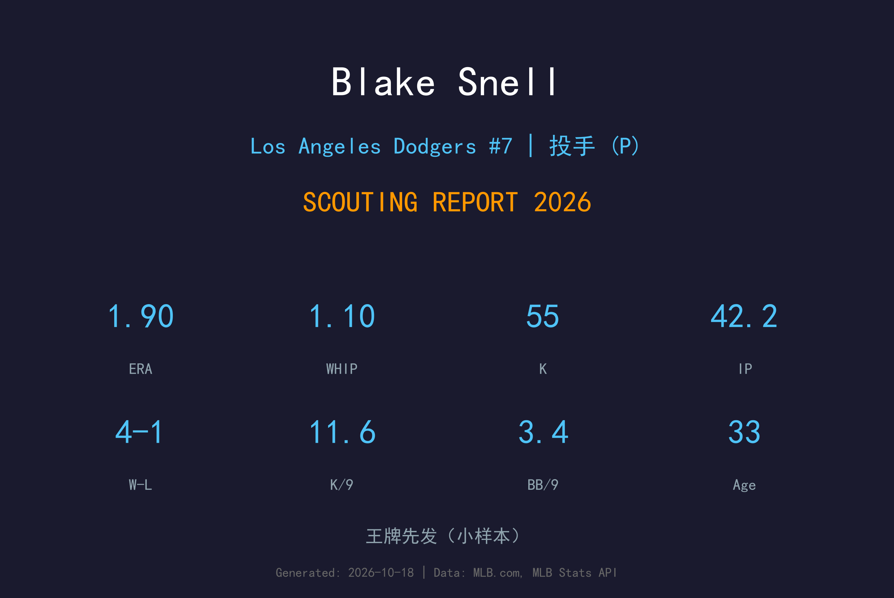
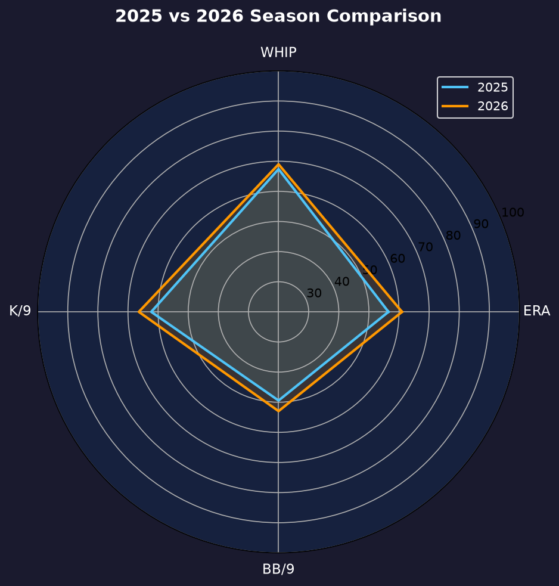
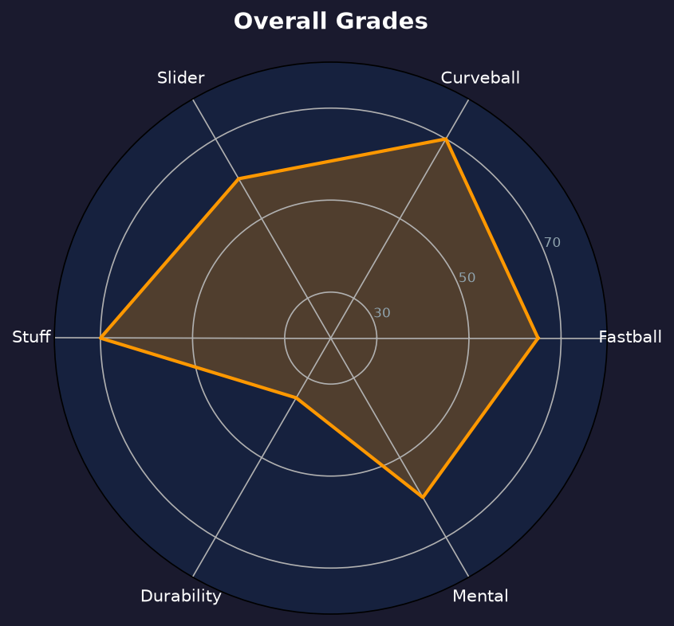

Los Angeles Dodgers #7 | 先发投手 | 左投 / 左打 | 双联盟赛扬

Blake Snell 是 MLB 历史上第六位在两个联盟都拿下赛扬奖的投手（2018 美联、2023 国联）。2025年与道奇签下5年1.82亿美元巨额合约后，他延续着"健康时无人能敌、伤病时杳无音信"的职业生涯剧本。
2026年他仅9场先发，但缴出4胜1败、1.90 ERA、1.10 WHIP、11.60 K/9 的顶级成绩——最惊人的是 42.2 局0 支被全垒打。当他站在投手丘上，他就是棒球最难对付的左投。
33岁的 Snell 已经进入生涯的黄昏期，但他每一次健康登场都在提醒世人：双联盟赛扬的天赋从未消失。道奇对他的使用策略只有一条——省着用，留到十月。
21胜5败、1.89 ERA、被打击率 .178，现代棒球最具统治力的左投赛季之一。
14胜9败、2.25 ERA（教士），成为 MLB 历史第六位双联盟赛扬得主。
仅9场先发但整季未轰出任何一支全垒打，1.90 ERA 再次证明巅峰仍在。

| 赛季 | GS | W-L | ERA | IP | SO | BB | WHIP | HR |
|---|---|---|---|---|---|---|---|---|
| 2025 | 11 | 5-4 | 2.35 | 61.1 | 72 | 26 | 1.26 | 3 |
| 2026 | 9 | 4-1 | 1.90 | 42.2 | 55 | 16 | 1.10 | 0 |
出赛场次再缩（11→9场），但 ERA、WHIP、保送全面改善——健康时的 Snell 是一年比一年更精纯的投手。
主战球种，占全部配球的 49.5%，均速 96.0 mph。直上直下的四缝线速球，负责抢好球数与建立球数领先，是所有配球的基准。
常用武器，占全部配球的 21.9%，均速 79.9 mph。曲球落差大，用于改变打者视线高度与击球节奏。
常用武器，占全部配球的 17.8%，均速 84.8 mph。变速球靠与速球的速差取命，主要用来对付反侧打者。
辅助配球，占全部配球的 10.8%，均速 88.8 mph。传统滑球横向位移锐利，是两好球后的主要挥空武器。
42.2 局 0 轰在现代棒球几乎是不可复制的成就。这不仅是运气——Snell 的球路设计让打者无法把球拉到空中：他的曲球与速球高低搭配让击球仰角始终被压在地滚与平飞之间。0.00 HR/9 与 0.44（2025）连续两季，证明这是可重复的技战术成果。
9场先发的背后是又一次伤病中断（具体为左腹股沟拉伤，6月进入 IL 后直至9月才复出）。道奇对他的使用极其谨慎：复出后严格控制投球数，宁可牺牲局数也要保住每一次登板的质量。
4胜1败、1.90 ERA、0轰——如果这能拉长到25场先发，他会是赛扬奖的有力竞争者。但现实是，Snell 的生涯已经进入"质量大于数量"的阶段。道奇为他的天赋支付了1.82亿，而他每年只能用 1/3 的赛季来回报。

双联盟赛扬的巅峰仍在，健康是唯一变量
B+ 级 / 高风险高回报王牌
道奇 2026 季后赛战绩：NLDS 3-1 晋级、NLCS 0-4 止步。
| G | GS | IP | ERA | WHIP | SO | BB | H | HR |
|---|---|---|---|---|---|---|---|---|
| 2 | 2 | 9.2 | 4.66 | 1.45 | 14 | 7 | 7 | 3 |
Blake Snell 的2027赛季目标只有一个：把健康保持到十月。道奇已明确将他的工作量控制在 120-140 局，用全季换他在季后赛的完全体。
2026：9场 4-1、1.90 ERA、0轰 → 季后赛2场 4.66 ERA
2027：目标 18+ 场先发、ERA 3.00 以下、健康进入季后赛
2028+：合约期内逐步转型"季后赛专属武器"，参考 Kluber/Scherzer 生涯末期模式
Blake Snell 出生于华盛顿州西雅图，父亲是前职业足球运动员，母亲是大学垒球运动员。他在高中就展现顶级投球天赋，2011年被坦帕湾光芒首轮第52顺位选中，在光芒小联盟体系缓慢爬升后于2016年登上大联盟。
2018年是他爆发的一年——21胜5败、1.89 ERA 拿下美联赛扬。2023年在圣地亚哥教士以 2.25 ERA 拿下国联赛扬，成为 MLB 历史第六位双联盟赛扬得主（继 Randy Johnson、Pedro Martinez、Roger Clemens、Roy Halladay、Max Scherzer 之后）。
2025年他与道奇签下5年1.82亿美元巨额合约。Snell 性格直率，不避讳谈论表现与合约问题，对胜利的渴望强烈——这也是他能在压力场面表现出色的原因。他的生涯剧本始终写满"如果健康"的假设，而道奇愿意为这个假设支付顶薪。